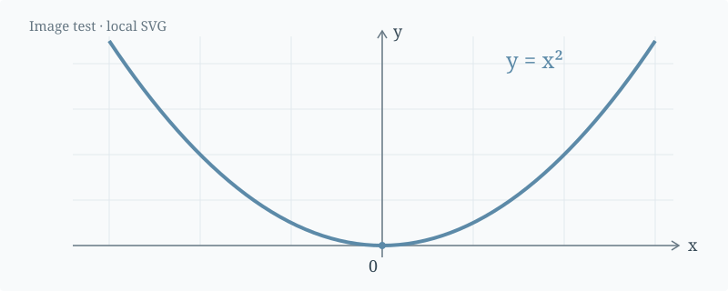
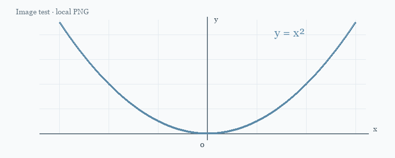

Images and Math Test
Back to notesTest local images, inline math, display equations, matrices, tables, code blocks, and PDF links.
Contents
This note tests images and mathematical notation alongside regular text. It uses the same anonymous header as the rest of the website.
1. Local Images
The following image loads from the website's assets/images folder and scales to fit the available width.

Figure 1. An SVG illustration with x on the horizontal axis and y on the vertical axis.
Here is the same illustration in PNG format:

Figure 2. A PNG illustration. Both formats use standard Markdown image syntax.
Image paths start at the website root:

2. Inline Math
The linear elastic relation is
The linear elastic relation is $\sigma = E\varepsilon$.
3. Display Equations
Place an equation between two lines containing $$ to display it on a separate, centered line:
$$
\int_0^1 x^2\,\mathrm{d}x = \frac{1}{3}
$$
4. Multiline Equations and Matrices
Use the aligned environment to align the steps of a calculation:
Matrices and vectors can appear in the same equation:
5. Tables, Lists, and Code
Inline math also works inside tables:
| Feature | Example | Purpose |
|---|---|---|
| Subscript | Identify the i-th element | |
| Summation | Sum a series of values | |
| Fraction | Express a ratio |
- Use bold and italics to highlight key terms.
- Use blockquotes for excerpts or reminders.
- Code blocks preserve indentation and line breaks. Dollar signs inside them are not rendered as math.
This is a blockquote. Use it for reading excerpts, observations, or questions to revisit.
def square(x):
return x ** 2
print(square(3))
6. Literal Text and Long Equations
To show math as literal text, put it inside backticks, as in $E = mc^2$. Escape a regular dollar sign with \$: for example, the price is $20.
On narrow screens, long equations scroll horizontally within their own area while the rest of the page keeps its normal width:
This note checks image loading, equation layout, and page overflow on mobile screens.
7. PDF Files
PDF attachments use ordinary Markdown links:
The local file is stored in assets/documents/ and is included when the site is built. Both PDF links open in a new tab, keeping this note available. Your browser may open its PDF viewer or offer to save the file, depending on its settings.
[Open the local PDF sample](assets/documents/pdf-link-test.pdf)
[Open an external PDF](https://www.w3.org/WAI/ER/tests/xhtml/testfiles/resources/pdf/dummy.pdf)
8. Code Block Controls
The language is shown above each code block. Hover over a block or focus its copy button with the keyboard to reveal Copy. Touch devices keep the button visible. Copy always includes the complete code, even while the block is folded.
Blocks longer than 20 lines initially show the first 12 lines. Use the button below this example to expand or collapse it. Printing includes all lines.
from statistics import fmean
def moving_average(values, window=3):
if window < 1:
raise ValueError("window must be positive")
if window > len(values):
return []
result = []
for start in range(len(values) - window + 1):
sample = values[start:start + window]
result.append(fmean(sample))
return result
def normalize(values):
maximum = max(values, default=0)
if maximum == 0:
return [0 for value in values]
return [value / maximum for value in values]
measurements = [12, 14, 13, 18, 17, 21, 20]
smoothed = moving_average(measurements)
scaled = normalize(smoothed)
for index, value in enumerate(scaled, start=1):
print(f"Sample {index}: {value:.3f}")